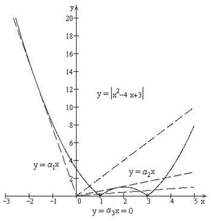

П19.1 №18
Найдите число корней уравнения в зависимости от параметра  .
.
.РЕШЕНИЕ:
График функции пересекается
с графиком в различном количестве
точек в зависимости от .
. Области существования одного, двух, трех и
четырех корней определяются геометрическим положением оси  и касательными к графику функции в
точках
и касательными к графику функции в
точках  и
и  .
.
и касательными к графику функции в
точках и .Найдем угловые коэффициенты этих касательных.
Касательная  задана уравнением , ,
где . Координаты точки касания находим из условия:
задана уравнением , ,
где . Координаты точки касания находим из условия:
задана уравнением , ,
где . Координаты точки касания находим из условия: , и .
Аналогично для касательной  : ,
, где ,
: ,
, где ,
: ,
, где ,
, и .
В итоге получаем, что при уравнение имеет один корень; при – корней нет; при и –
два корня; при – три, а при – четыре корня.
